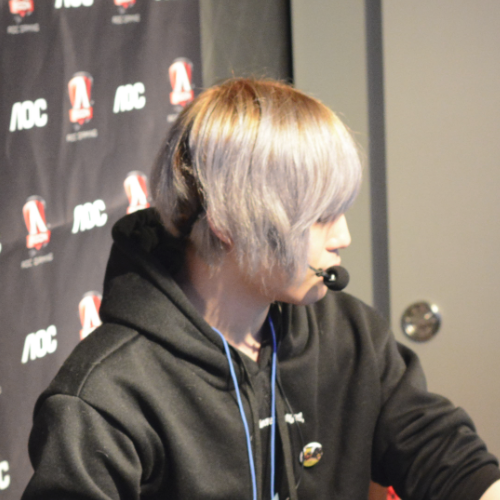

-

-
Overwatchのキャスター・コメンテーター
歌うことと猫が好き。
- オフライン出演
- 東京ゲームショウ2016 SONYブース RIGS Machine Combat League（選手）
- 東京ゲームショウ2016 DXRACERブース SCARZ (選手インタビュー)
- 東京ゲームショウ2017 Dellブース スタダGG!特別編 (解説)
- ゆるだらオーバーウォッチ会 スペシャル 3on3 (解説)
- スタダGG!#23 PUBG (特別指導・MC)
- オンライン出演
- LIFT OFF 1Day Tournament #4 (解説)
- LIFT OFF 1Day Tournament #5 (実況)
- LIFT OFF 1Day Tournament #6 (解説)
- Overwatch Pacific Championship Season2 (公式日本語解説)
- 第一回 u3000交流会・紅白戦 (個人主催・解説)
- 第二回 u3000交流会・紅白戦 (個人主催・解説)
- Challenger Overwatch Cup(COC)#1 Day1,Day2 (解説)
- 第二回 裏FANBAT OWオンライン大会(実況)
- CKJ-OverwatchCommunity-PRE SERIES#1(実況)